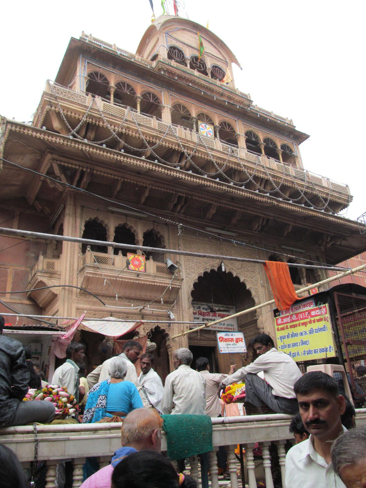
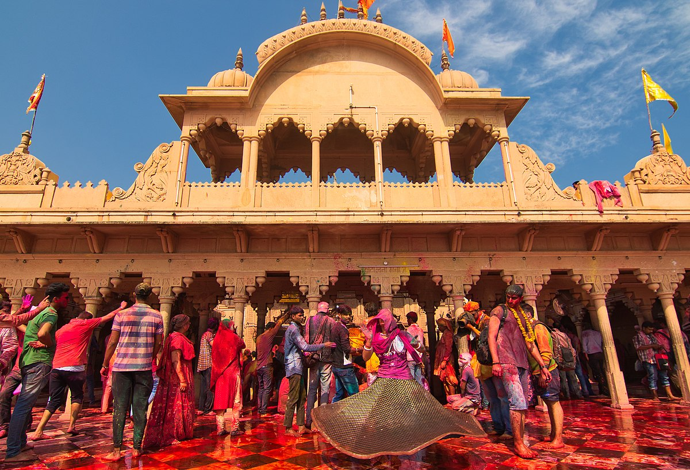
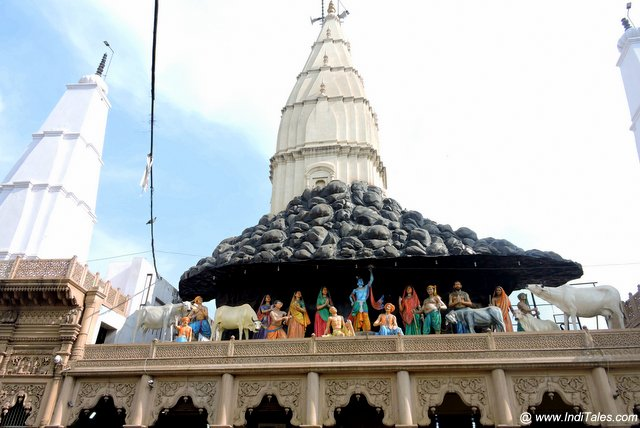

Banke Bihari ji
Bankey Bihari Temple is a Hindu temple of the Radha-vallabha tradition dedicated to Krishna, in the holy city of Vrindavan in the Mathura district of Uttar Pradesh, India. It was constructed in 1864.Situated near Shri Radha Vallabha Temple, Bankey Bihari was originally worshipped at Nidhivan, Vrindavan.
Book NowPrem Mandir

Prem Mandir is a Hindu temple in Vrindavan, Mathura, Uttar Pradesh, India. It is maintained by Jagadguru Kripalu Parishat, an international non-profit, educational, spiritual, charitable trust. The complex is on a 55-acre site on the outskirts of Vrindavan. It is dedicated to Radha Krishna and Sita Ram. Radha Krishna are on the first level and Sita Ram are on the second level.
Book NowBarsane Temple
Shri Radha Rani Temple, also called Shriji Temple and Shri Laadli Lal Temple, is a Hindu Temple, located in Barsana in Mathura district, Uttar Pradesh,India. The temple is dedicated to the goddess Radha. Barsana is believed to be her birthplace. The main deities of the temple are called Shri Laadli Lal, another name of Radha Krishna respectively.
Book NowGovardhan Yatra
Govardhan Hill, also called Mount Govardhana and Giriraj, is a sacred Hindu site in the Mathura district of Uttar Pradesh, India on an 8 km long hill located in the area of Govardhan and Radha Kund, which is about 21 kilometres from Vrindavan. It is the sacred centre of Braj and is identified as a natural form of Krishna
Book Now